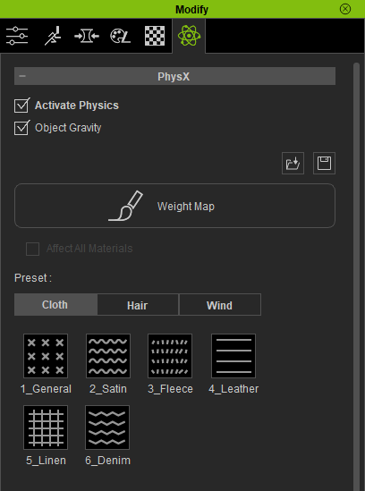

Cloth Physics
Introduction
By default, physics simulation in Unity uses the Nvidia PhysX engine. The Unity implementation of cloth simulation using this engine requires the combined use of the <SkinnedMeshRenderer> and <Cloth> Unity components.
<SkinnedMeshRenderer> The skinned mesh renderer component is used to display the mesh deformations that are being simulated.
<Cloth> Ths cloth component is used to construct a simplified ‘Cloth Mesh’ consisting of ‘Cloth Particles’ which can then interact with gravity, motion and specific primitive colliders. This ‘Cloth Mesh’ then deforms the original mesh for display by the skinned mesh renderer.
In order to control the cloth simulation, Unity users must manually ‘paint’ the ‘Cloth Mesh’ with movement constraint values and specify which primitive colliders (either Sphere or Capsule colliders) can interact with the cloth.
Unity intends that the cloth simulation be set up manually and all the colliders be entered (from in-scene objects) by hand. This is obviously a significant obstacle to using cloth simulation.
The challenge then is to take the capsule collider set which is used by Character Creator and reconstruct it in Unity; and to take the weight paint maps from CC and impose them as constraints on a ‘Cloth Mesh’ calculated from the original mesh in Unity for the clothing item; and automate it.
The capsule colliders used in Character Creator. |
The weight map of a typical clothing item from Character Creator. |
The import of Character Creator characters with physics enabled clothing items has thus been greatly simplified.
Physics can be added with the usual ‘Build Materials’ function.
Alternatively a separate function has been provided to add or or re-apply physics.
The colliders are rebuilt with the parameters they have been set up with in CC/iClone and are attached to the character prefab
A ‘Cloth Mesh’ is created from the original clothing mesh and is constraint painted with the data from the weight paint map in CC/iClone.
The colliders on the character model which are able to interact with parts of the simulated cloth that is permitted to move are also automatically added to the character prefab.
The capsule colliders rebuilt in Unity. |
Weight map translated to movement constraints in Unity. |
Only the colliders which can interact with moveable cloth are included for cloth simulation. |
From an end user perspective, a very large amount of tricky setup has been reduced to a single button press. The full details of the workflow are outlined below.
Workflow
Physics Requirements
The basic requirement to allow Unity cloth physics to work is that in Character Creator or iClone, the clothing item that you wish to cloth simulate must have ‘Activate Physics’ checked in the item’s physics tab, and it must also have a valid PhysX weight map.
 |
|
CC Physics tab with activated physics. |
CC Weight map for PhysX. |
There are numerous settings which can be adjusted in the physics tab, for further information please see the Reallusion physics tab documentation.
Basic Physics Workflow Details
Ensure physics is correctly activated for the clothing items you are interested in (see requirements above).
Ensure that the cloth simulation in Character Creator or iClone is to your satisfaction. If you need to make changes then the Unity add-on will attempt to interpret these settings as accurately as possible - should any further adjustments be needed then they can be performed in Unity itself.
Export the character. Please see the Export From Character Creator section of the documentation.
Follow the procedure in the Importing into Unity section of the documentation.
If you wish to have physics included immediately then in the ‘Features’ dropdown of the importer tool, please ensure that ‘Cloth Physics’ is active (it is not by default).
Build the materials as you normally would.
If you wish to add physics to a pre-existing character or reapply physics to your character, then you can use the button in the main pane of the import tool.
{kind=link}
The physics information will ether be included in the newly created character prefab or the prefab will be updated with the (re)applied physics information. NB Only the prefab contains the physics data.
This completes the basic workflow.
Post-Import Correction
Two new object components have been added in order to more easily tune all of the physics parameters for the character. These components are automatically added to the character prefab and are accessible from the Inspector window. These are the Collider Manager and the Weight Mapper.
The <ColliderManager> Component
The Collider Manager is used to manage all of the capsule colliders that have been added to the character prefab by the physics import process. It is added as a ‘Component’ to the root of the prefab GameObject.
The Collider Manager contains a pre-made list of all the colliders attached to the character (these colliders are only shown in the Scene when the visibility of Gizmos in the scene view is toggled ON).
{kind=link}
Collider List
The Collider Manager also has a set of tools to allow easy adjustment of each collider’s size and position without having to dig through the hierarchy to find the required object.
{kind=link}
Collider Tools
The collider to be adjusted is selected using the drop down menu labelled Collider
The available sliders allow adjustment of both the radius and height of the Capsule Collider and it’s local position as x,y & z values.
The adjustment tools can also be used in ‘Play Mode’ (the physics simulation only runs during Play Mode) and any values that are set can be saved and recalled after play mode ends (any changes to settings made when play mode is active are usually reset when play mode ends, so a means of recalling those changes was added).
Settings can be saved at any time (not just play mode) - changes can only be applied to a prefab outside of play mode.
Changes to the colliders can be preserved by applying to the prefab. Any saved settings can also be reload and applied at any time (e.g. if you rebuild the physics then everything is reset to default - but previous collider adjustments can be reloaded).
Collider Save/Recall/Apply
The Collider Manager also contains quick links to any physics enabled Cloth objects on the character.
The <WeightMapper> Component
The Weight Mapper contains tools to manipulate both the cloth parameters and the constraint painting of the object it is attached to. It is added as a ‘Component’ to each valid cloth object (i.e. ones that had physics originally enabled in Character Creator).
The Cloth objects now have a <WeightMapper> component that allows fine control of the weight parameters and the cloth simulation parameters. These settings can also be individually saved and recalled.
Any settings made in the Weight Mapper are specific only to the object the <WeightMapper> Component is attached to.
{kind=link}
Weight Mapper Settings
Weight Parameters:
These parameters control how the original weight map from CC is translated into the Unity constraint system.
Max Distance |
The maximum distance that the ‘Cloth Particle’ is allowed to move forward along the normal from its original mesh position. |
Max Penetration |
The maximum distance that the ‘Cloth Particle’ is allowed to move along its anti-*normal from its original position (i.e. how far *beneath the original mesh is the cloth allowed to move) |
Weight Map |
The original weight map from the CC export |
Weight Map Power/Offset/Scale |
These three parameters are essentially a simple mimic of the brightness and contrast controls for the weight map as found in CC/iClone.
|
Cloth Simulation Parameters:
These parameters are intended to have the same or similar utility to their equivalents in Character Creator; the Weight Mapper will translate them into appropriate parameters for Unity.
Activate |
Whether the cloth component is to be simulated or not. |
Gravity |
Whether the cloth component is subject to gravity or not. |
Mass |
The mass of each ‘Cloth Particle’ used internally by Unity. |
Friction |
The friction of the cloth when colliding with the collider. |
Damping |
Motion damping coefficient. |
Stretch |
How much should the cloth stretch (larger means more stretch). |
Bending |
How much should the cloth bend (larger means more bend). |
Soft Rigid Collision |
When ON this will assign colliders to the <Cloth> component. When OFF no colliders will be assigned at all. |
Soft Rigid Margin |
This controls the proximity margin used to detect whether a collider should be allowed to interact with a moveable portion of the cloth mesh (when Optimized Colliders are used - see below). |
Solver & Stiffness Frequency |
These values controls the simulation timing of the PhysX system. |
Collider Threshold |
This is the weight threshold (from the weight map + power/offset/scale) that must be reached before a collider can be assigned to the cloth when optimized colliders are being assigned.
|
General Settings
These settings are a series of overrides for collider management.
Update Colliders |
When ON any rebuild or re-application of physics will overwrite the collider settings - if you have changed the collider setup (eg added or removed colliders from the cloth object) and wish to retain that setup then set this to OFF before rebuilding. |
Optimize colliders |
When ON this will determine which colliders can actually interact with your cloth item and on add them to the <Cloth> component’s collider list. |
Include All Limb Colliders |
This is used to force ALL of the limb colliders to be included in the <Cloth> component collider list (i.e. upper/lower arm + hand & upper.lower leg). |
When changes have been made, the <Cloth> object can be updated with the new settings using the ‘Rebuild Constraints’ button.
Rebuild Constraints to update Unity Cloth Physics
Changes may also be preserved and saved/recalled to/from the asset database using the Save and recall functions. Remember any changes that are made are only made to the model in the Scene: To properly retain these settings use ‘Apply to Prefab’.
Save, Recall and Apply to Prefab
A link back to the collider manager is also provided.